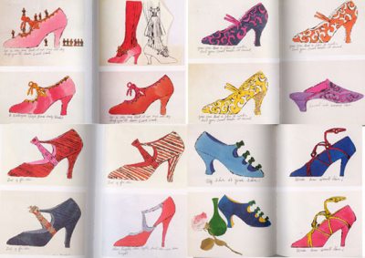
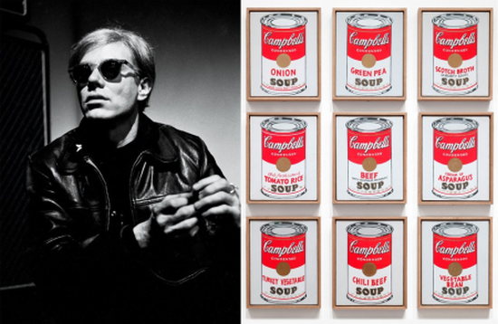
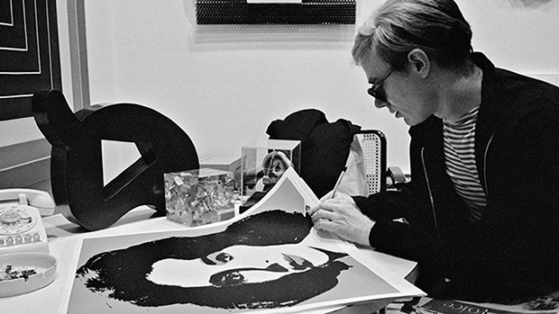

As equally as he was an artist, Warhol was an entrepreneur. He kickstarted his career in the 1950s as a commercial illustrator, earning a sizeable revenue to finance his artistic ventures. Warhol grew up during the rise of post-war consumer culture in the U.S. and England and realized the benefit of assembly lines in manufacturing, employing studio assistants and processes to aid his artistic production. Warhol successfully balanced commercial and entrepreneurial endeavors with avant-garde, underground work. He continually pushed himself to experiment in new media—publishing, film, music production, television, fashion, theater—throughout his career and frequently collaborated with artists and brands. Warhol wrote in The Philosophy of Andy Warhol (From A to B and Back Again), "Being good in business is the most fascinating kind of art. Making money is art and working is art and good business is the best art."
Warhol was known for his blotted-line ink drawings, using a process he developed in college and refined in the 1950s. This working method combined drawing with basic printmaking and allowed Warhol to repeat an image and to create multiple illustrations along a similar theme. He could also make color or compositional changes quickly in response to client requests.

Warhol's shoes
Campbell's Soup Cans and Coca Cola Bottles

In the late 1950s, Warhol began devoting more attention to painting, and in 1961, he debuted the concept of "pop art" — paintings that focused on mass-produced commercial goods. In 1962, he exhibited the now-iconic paintings of Campbell's soup cans. These small canvas works of everyday consumer products created a major stir in the art world, bringing both Warhol and pop art into the national spotlight for the first time.
British artist Richard Hamilton described pop art as "popular, transient, expendable, low cost, mass-produced, young, witty, sexy, gimmicky, glamorous, big business." As Warhol himself put it, "Once you 'got' pop, you could never see a sign the same way again. And once you thought pop, you could never see America the same way again."
Warhol's other famous pop paintings depicted Coca-cola bottles, vacuum cleaners and hamburgers.
Portraits
He also painted celebrity portraits in vivid and garish colors; his most famous subjects include Marilyn Monroe, Elizabeth Taylor, Mick Jagger and Mao Zedong. As these portraits gained fame and notoriety, Warhol began to receive hundreds of commissions for portraits from socialites and celebrities. His portrait "Eight Elvises" eventually resold for $100 million in 2008, making it one of the most valuable paintings in world history.

Elizabeth Taylor's portrait
The Factory
In 1964, Warhol opened his own art studio, a large silver-painted warehouse known simply as "The Factory." The Factory quickly became one of New York City's premier cultural hotspots, a scene of lavish parties attended by the city's wealthiest socialites and celebrities, including musician Lou Reed, who paid tribute to the hustlers and transvestites he'd met at The Factory with his hit song "Walk on the Wild Side" — the verses of which contain descriptions of individuals who were fixtures at the legendary studio/warehouse in the '60s, including Holly Woodlawn, Candy Darling, "Little Joe" Dallesandro, "Sugar Plum Fairy" Joe Campbell and Jackie Curtis. (Warhol was a friend of Reed's and managed Reed's band, The Velvet Underground.)
Warhol, who clearly relished his celebrity, became a fixture at infamous New York City nightclubs like Studio 54 and Max's Kansas City. Commenting on celebrity fixation — his own and that of the public at large — Warhol observed, "more than anything people just want stars." He also branched out in new directions, publishing his first book, Andy Warhol's Index, in 1967.
In 1968, however, Warhol's thriving career almost ended. He was shot by Valerie Solanas, an aspiring writer and radical feminist, on June 3rd. Warhol was seriously wounded in this attack. Solanas had appeared in one of Warhol's films and was reportedly upset with him over his refusal to use a script she had written. After the shooting, Solanas was arrested and later pleaded guilty to the crime. Warhol spent weeks in a New York hospital recovering from his injuries and underwent several subsequent surgeries. As a result of the injuries he sustained, he had to wear a surgical corset for the rest of his life.
Warhol Books and Films
In the 1970s, Warhol continued to explore other forms of media. He published such books as The Philosophy of Andy Warhol (From A to B and Back Again) and Exposures. Warhol also experimented extensively with video art, producing more than 60 films during his career. Some of his most famous films include Sleep, which depicts poet John Giorno sleeping for six hours, Eat, which shows a man eating a mushroom for 45 minutes and Empire (1964), consists of eight hours of footage of the Empire State Building in New York City at dusk. Batman Dracula is a 1964 film that was produced and directed by Warhol, without the permission of DC Comics. It was screened only at his art exhibits. A fan of the Batman series, Warhol's movie was an "homage" to the series, and is considered the first appearance of a blatantly campy Batman. The film was until recently thought to have been lost, until scenes from the picture were shown at some length in the 2006 documentary Jack Smith and the Destruction of Atlantis. Warhol's 1965 film Vinyl is an adaptation of Anthony Burgess' popular dystopian novel A Clockwork Orange. Others record improvised encounters between Factory regulars such as Brigid Berlin, Viva, Edie Sedgwick, Candy Darling, Holly Woodlawn, Ondine, Nico, and Jackie Curtis. Legendary underground artist Jack Smith appears in the film Camp.
His most popular and critically successful film was Chelsea Girls (1966). The film was highly innovative in that it consisted of two 16 mm-films being projected simultaneously, with two different stories being shown in tandem.
Warhol also worked in sculpture and photography, and in the 1980s, he moved into television, hosting Andy Warhol's TV and Andy Warhol's Fifteen Minutes on MTV.